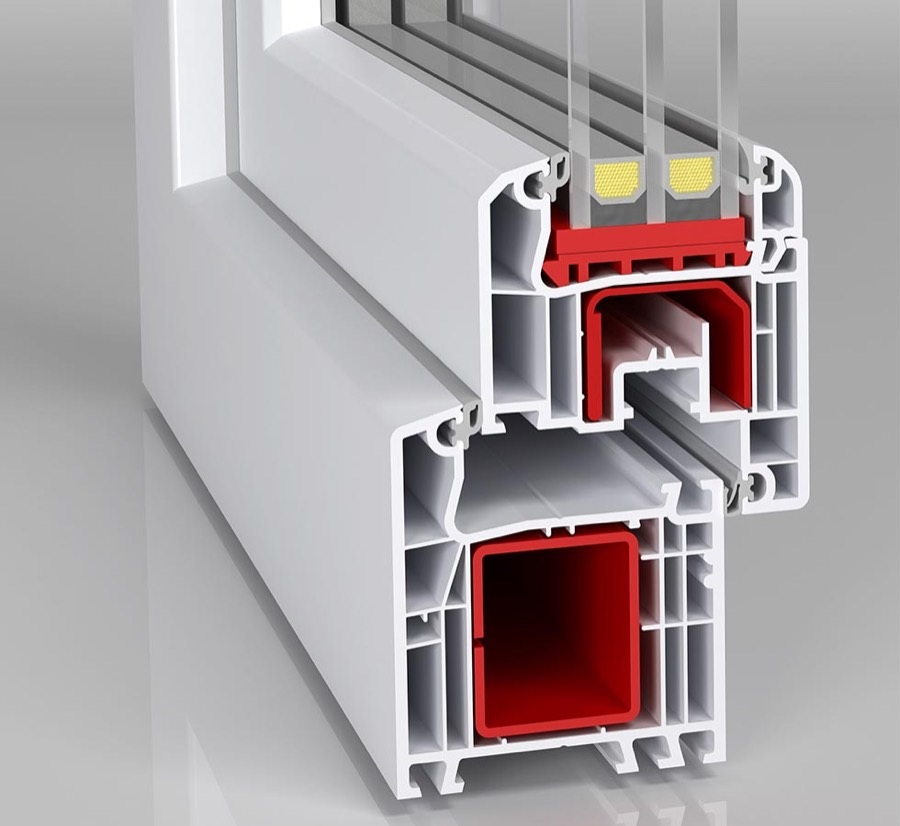

Osnovni prozor
IDEAL 4000
Moderan profil ravnih površina i oštrih bridova, dobre zvučne i toplinske izolacije.
- Komore
- 5, dvije brtve
- Dubina
- 70 mm
- Staklo
- 24 – 40 mm
- Uw
- 1,4 – 0,92 W/m²K